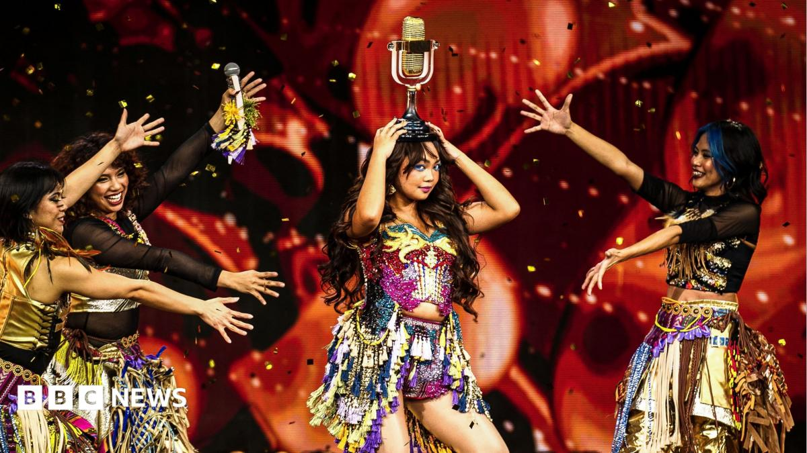

World · 15 Nov 2026
Philippines wins first Eurovision Song Contest Asia

Front-runner Carmelle emerges victorious with her women's empowerment anthem Sobra-Sobra.
Multiple independent publishers are reporting on the same development: Philippines wins first Eurovision Song Contest Asia.
The available reports place the development in the World category. The accounts were compared for agreement on the central event rather than simply shared names or broad topics.
One of the available reports describes the development this way: Front-runner Carmelle emerges victorious with her women's empowerment anthem Sobra-Sobra.
Readers should consult the linked source reports for additional context, updates and details that may change as the story develops.
Sources
This article was produced by the C. O. Eric AI Newsroom from the cited sources. It is published only after automated evidence and safety checks.